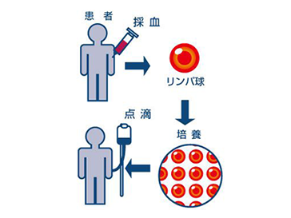

免疫力で
がんを
治療する
最新情報
NEWS
-
2023.02.01
各種健康診断の結果について、当院院長との医療相談、アドバイスをはじめました。
-
2023.02.01
がん治療、がん予防、健康維持の為の高濃度ビタミンＣ点滴もございます。
-
2023.02.01
パンフレットと理事長書籍活性ＮＫ細胞療法無料でお送りします。お気軽にお電話下さい
クリニックからのお知らせ
INFORMATION
-
2023.02.01
当院からのお願い：
入室時、非接触型温度計で体温を計測させて頂きます。入室時のマスク着用。入室、退室時の手指消毒 -
2023.02.01
ホームページリニューアルしました。
診療内容
MEDICAL COURSE
副作用の少ない免疫療法でがん治療を行っております。
当院の免疫療法は、患者さんから頂いた血液を用いて行う副作用の少ないがん治療で、ほとんどのがんで治療が可能です。
がん予防でされる方も多いです。
当院の免疫細胞培養センター
培養センターを併設する事により、検体（血液）の速やかな処理、即時に培養を行う事が可能です。クリニック部門と培養部門が連携し徹底した管理下で行っています。
がんは長い年月をかけて成長するものです。1cmのがんであっても、がん細胞の数は数億から数十億とも言われています。このがん細胞を攻撃するにはリンパ球の数も大量に増やす必要があります。そこで当院の活性NK細胞療法では専用の無菌細胞培養施設（培養センター）にて、患者さんから頂いた血液を分離してNK細胞を取り出し、NK細胞の数を通常の20倍から60倍（個人差があります）にまで増殖して、細胞を活性化させて患者さんへ投与します。
一つの治療だけでなく複数の療法を行う事で免疫細胞のバランスがとれ、より良い治療効果が望める可能性もあります。
当院では患者さんのメンタル面のケアも施しています。がんは免疫の病気とも言われています。その為、がんを克服しようとする患者さん自身の力ががん治療にはプラスの治療効果を発揮する事となります。
